本章目录
- This chapter covers
- 3.1 The problem with modeling long sequences
- 3.2 Capturing data dependencies with attention mechanisms
- 3.3 Attending to different parts of the input with self-attention
- The “self” in self-attention
- 3.3.1 A simple self-attention mechanism without trainable weights
- Understanding dot products
- 3.3.2 Computing attention weights for all input tokens
- 3.4 Implementing self-attention with trainable weights
- 3.4.1 Computing the attention weights step by step
- Weight parameters vs. attention weights
- The rationale behind scaled-dot product attention
- Why query, key, and value?
- 3.4.2 Implementing a compact self-attention Python class
- Exercise 3.1 Comparing SelfAttention_v1 and SelfAttention_v2
- 3.5 Hiding future words with causal attention
- 3.5.1 Applying a causal attention mask
- Information leakage
- 3.5.2 Masking additional attention weights with dropout
- 3.5.3 Implementing a compact causal attention class
- 3.6 Extending single-head attention to multi-head attention
- 3.6.1 Stacking multiple single-head attention layers
- Exercise 3.2 Returning two-dimensional embedding vectors
- 3.6.2 Implementing multi-head attention with weight splits
- Exercise 3.3 Initializing GPT-2 size attention modules
- Summary
Coding attention mechanisms#
This chapter covers#
At this point, you know how to prepare the input text for training LLMs by splitting text into individual word and subword tokens, which can be encoded into vector representations, embeddings, for the LLM.
Now, we will look at an integral part of the LLM architecture itself, attention mechanisms, as illustrated in figure 3.1. We will largely look at attention mechanisms in isolation and focus on them at a mechanistic level. Then we will code the remaining
50
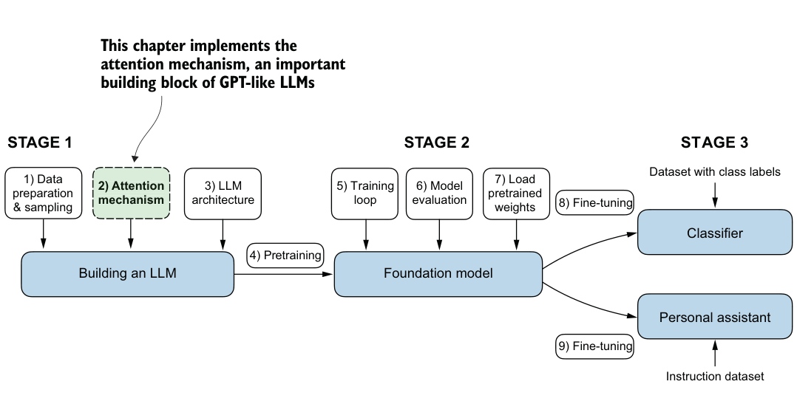
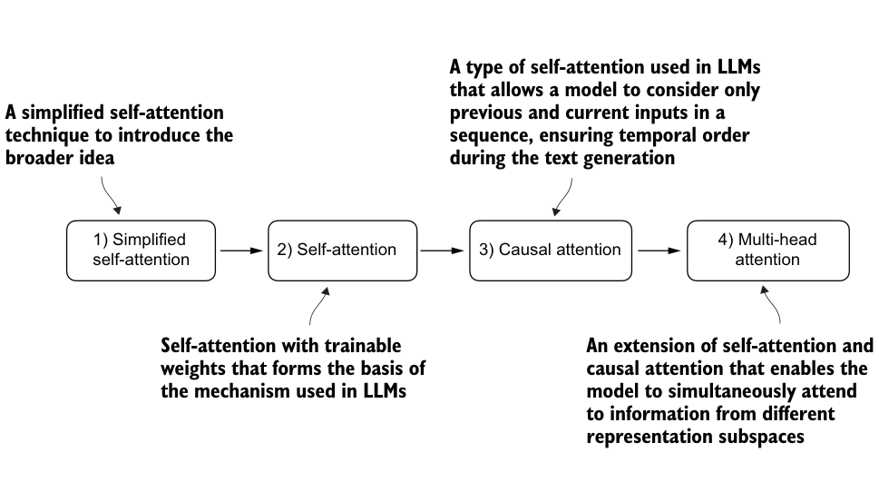
parts of the LLM surrounding the self-attention mechanism to see it in action and to create a model to generate text.
We will implement four different variants of attention mechanisms, as illustrated in figure 3.2. These different attention variants build on each other, and the goal is to
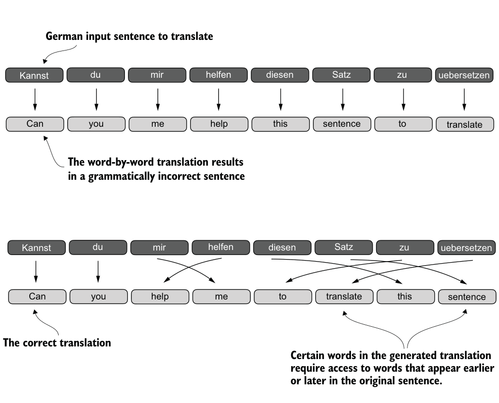
arrive at a compact and efficient implementation of multi-head attention that we can then plug into the LLM architecture we will code in the next chapter.
3.1 The problem with modeling long sequences#
Before we dive into the self-attention mechanism at the heart of LLMs, let’s consider the problem with pre-LLM architectures that do not include attention mechanisms. Suppose we want to develop a language translation model that translates text from one language into another. As shown in figure 3.3, we can’t simply translate a text word by word due to the grammatical structures in the source and target language.
To address this problem, it is common to use a deep neural network with two submodules, an encoder and a decoder. The job of the encoder is to first read in and process the entire text, and the decoder then produces the translated text.
Before the advent of transformers, recurrent neural networks (RNNs) were the most popular encoder–decoder architecture for language translation. An RNN is a type of neural network where outputs from previous steps are fed as inputs to the current
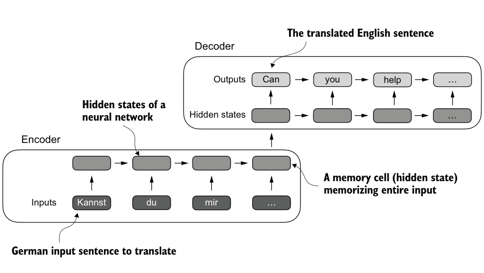
step, making them well-suited for sequential data like text. If you are unfamiliar with RNNs, don’t worry—you don’t need to know the detailed workings of RNNs to follow this discussion; our focus here is more on the general concept of the encoder– decoder setup.
In an encoder–decoder RNN, the input text is fed into the encoder, which processes it sequentially. The encoder updates its hidden state (the internal values at the hidden layers) at each step, trying to capture the entire meaning of the input sentence in the final hidden state, as illustrated in figure 3.4. The decoder then takes this final hidden state to start generating the translated sentence, one word at a time. It also updates its hidden state at each step, which is supposed to carry the context necessary for the next-word prediction.
While we don’t need to know the inner workings of these encoder–decoder RNNs, the key idea here is that the encoder part processes the entire input text into a hidden state (memory cell). The decoder then takes in this hidden state to produce the output. You can think of this hidden state as an embedding vector, a concept we discussed in chapter 2.
The big limitation of encoder–decoder RNNs is that the RNN can’t directly access earlier hidden states from the encoder during the decoding phase. Consequently, it relies solely on the current hidden state, which encapsulates all relevant information. This can lead to a loss of context, especially in complex sentences where dependencies might span long distances.
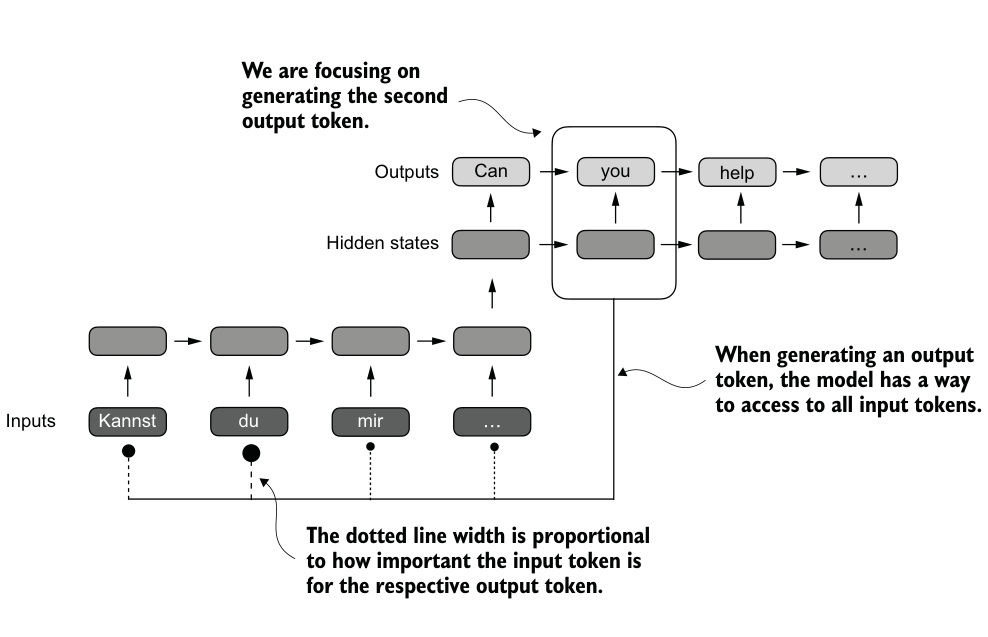
Fortunately, it is not essential to understand RNNs to build an LLM. Just remember that encoder–decoder RNNs had a shortcoming that motivated the design of attention mechanisms.
3.2 Capturing data dependencies with attention mechanisms#
Although RNNs work fine for translating short sentences, they don’t work well for longer texts as they don’t have direct access to previous words in the input. One major shortcoming in this approach is that the RNN must remember the entire encoded input in a single hidden state before passing it to the decoder (figure 3.4).
Hence, researchers developed the Bahdanau attention mechanism for RNNs in 2014 (named after the first author of the respective paper; for more information, see appendix B), which modifies the encoder–decoder RNN such that the decoder can selectively access different parts of the input sequence at each decoding step as illustrated in figure 3.5.
Interestingly, only three years later, researchers found that RNN architectures are not required for building deep neural networks for natural language processing and
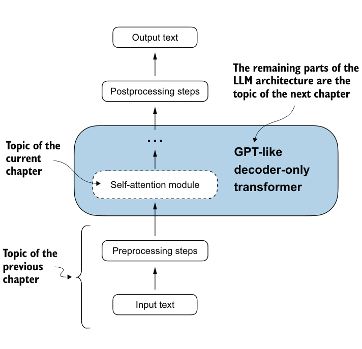
proposed the original transformer architecture (discussed in chapter 1) including a self-attention mechanism inspired by the Bahdanau attention mechanism.
Self-attention is a mechanism that allows each position in the input sequence to consider the relevancy of, or “attend to,” all other positions in the same sequence when computing the representation of a sequence. Self-attention is a key component of contemporary LLMs based on the transformer architecture, such as the GPT series. This chapter focuses on coding and understanding this self-attention mechanism used in GPT-like models, as illustrated in figure 3.6. In the next chapter, we will code the remaining parts of the LLM.
3.3 Attending to different parts of the input with self-attention#
We’ll now cover the inner workings of the self-attention mechanism and learn how to code it from the ground up. Self-attention serves as the cornerstone of every LLM based on the transformer architecture. This topic may require a lot of focus and attention (no pun intended), but once you grasp its fundamentals, you will have conquered one of the toughest aspects of this book and LLM implementation in general.
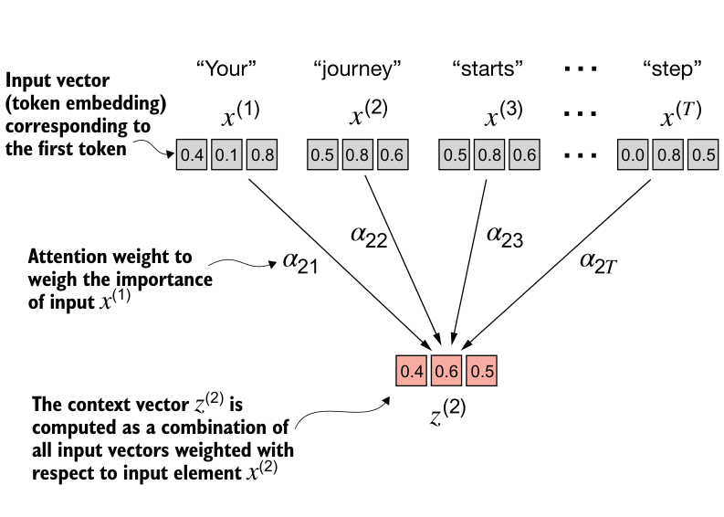
The “self” in self-attention #
In self-attention, the “self” refers to the mechanism’s ability to compute attention
weights by relating different positions within a single input sequence. It assesses and
learns the relationships and dependencies between various parts of the input itself,
such as words in a sentence or pixels in an image.
This is in contrast to traditional attention mechanisms, where the focus is on the rela-
tionships between elements of two different sequences, such as in sequence-to-
sequence models where the attention might be between an input sequence and an
output sequence, such as the example depicted in figure 3.5.
Since self-attention can appear complex, especially if you are encountering it for the first time, we will begin by examining a simplified version of it. Then we will implement the self-attention mechanism with trainable weights used in LLMs.
3.3.1 A simple self-attention mechanism without trainable weights#
Let’s begin by implementing a simplified variant of self-attention, free from any trainable weights, as summarized in figure 3.7. The goal is to illustrate a few key concepts in self-attention before adding trainable weights.
Figure 3.7 shows an input sequence, denoted as x, consisting of T elements represented as x(1) to x(T). This sequence typically represents text, such as a sentence, that has already been transformed into token embeddings.
For example, consider an input text like “Your journey starts with one step.” In this case, each element of the sequence, such as x(1), corresponds to a d-dimensional embedding vector representing a specific token, like “Your.” Figure 3.7 shows these input vectors as three-dimensional embeddings.
In self-attention, our goal is to calculate context vectors z(i) for each element x(i) in the input sequence. A context vector can be interpreted as an enriched embedding vector.
To illustrate this concept, let’s focus on the embedding vector of the second input element, x(2) (which corresponds to the token “journey”), and the corresponding context vector, z(2), shown at the bottom of figure 3.7. This enhanced context vector, z(2), is an embedding that contains information about x(2) and all other input elements,
x(1) to x(T).
Context vectors play a crucial role in self-attention. Their purpose is to create enriched representations of each element in an input sequence (like a sentence) by incorporating information from all other elements in the sequence (figure 3.7). This is essential in LLMs, which need to understand the relationship and relevance of words in a sentence to each other. Later, we will add trainable weights that help an LLM learn to construct these context vectors so that they are relevant for the LLM to generate the next token. But first, let’s implement a simplified self-attention mechanism to compute these weights and the resulting context vector one step at a time.
Consider the following input sentence, which has already been embedded into three-dimensional vectors (see chapter 2). I’ve chosen a small embedding dimension to ensure it fits on the page without line breaks:
import torch
inputs = torch.tensor(
[[0.43, 0.15, 0.89], # Your (x^1)
[0.55, 0.87, 0.66], # journey (x^2)
[0.57, 0.85, 0.64], # starts (x^3)
[0.22, 0.58, 0.33], # with (x^4)
[0.77, 0.25, 0.10], # one (x^5)
[0.05, 0.80, 0.55]] # step (x^6)
)The first step of implementing self-attention is to compute the intermediate values ω, referred to as attention scores, as illustrated in figure 3.8. Due to spatial constraints, the figure displays the values of the preceding inputs tensor in a truncated version; for example, 0.87 is truncated to 0.8. In this truncated version, the embeddings of the words “journey” and “starts” may appear similar by random chance.
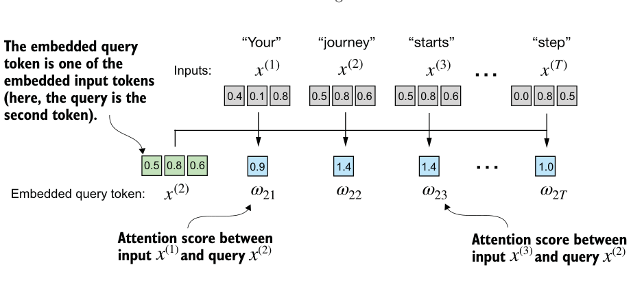
Figure 3.8 illustrates how we calculate the intermediate attention scores between the query token and each input token. We determine these scores by computing the dot product of the query, x(2), with every other input token:
代码旁注 1 条
- The second input token serves as the query.
query = inputs[1]
attn_scores_2 = torch.empty(inputs.shape[0])
for i, x_i in enumerate(inputs):
attn_scores_2[i] = torch.dot(x_i, query)
print(attn_scores_2)The computed attention scores are
tensor([0.9544, 1.4950, 1.4754, 0.8434, 0.7070, 1.0865])Understanding dot products #
A dot product is essentially a concise way of multiplying two vectors element-wise and
then summing the products, which can be demonstrated as follows:
res = 0.
for idx, element in enumerate(inputs[0]):
res += inputs[0][idx] * query[idx]
print(res)
print(torch.dot(inputs[0], query))The output confirms that the sum of the element-wise multiplication gives the same
results as the dot product:
tensor(0.9544)
tensor(0.9544)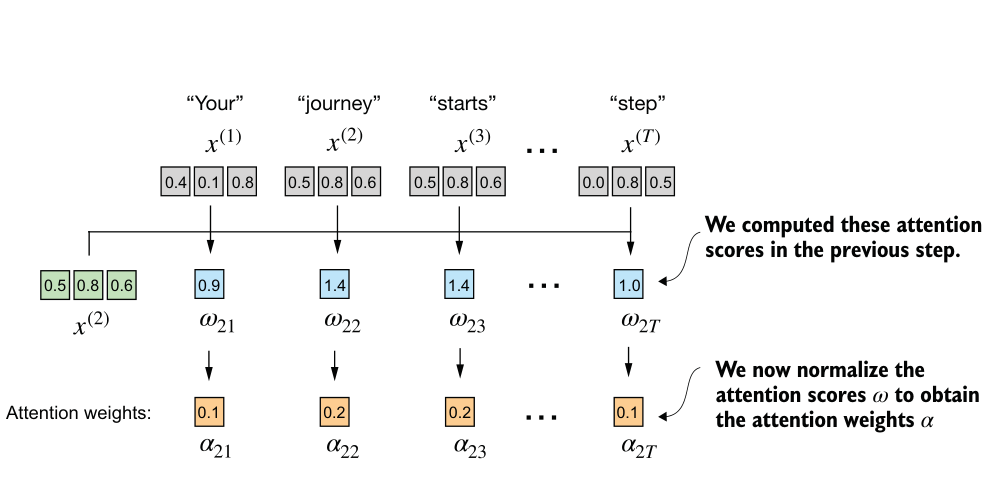
Beyond viewing the dot product operation as a mathematical tool that combines
two vectors to yield a scalar value, the dot product is a measure of similarity
because it quantifies how closely two vectors are aligned: a higher dot product indi-
cates a greater degree of alignment or similarity between the vectors. In the con-
text of self-attention mechanisms, the dot product determines the extent to which
each element in a sequence focuses on, or “attends to,” any other element: the
higher the dot product, the higher the similarity and attention score between two
elements.
In the next step, as shown in figure 3.9, we normalize each of the attention scores we computed previously. The main goal behind the normalization is to obtain attention weights that sum up to 1. This normalization is a convention that is useful for interpretation and maintaining training stability in an LLM. Here’s a straightforward method for achieving this normalization step:
attn_weights_2_tmp = attn_scores_2 / attn_scores_2.sum()
print("Attention weights:", attn_weights_2_tmp)
print("Sum:", attn_weights_2_tmp.sum())As the output shows, the attention weights now sum to 1:
Attention weights: tensor([0.1455, 0.2278, 0.2249, 0.1285, 0.1077, 0.1656])
Sum: tensor(1.0000)In practice, it’s more common and advisable to use the softmax function for normalization. This approach is better at managing extreme values and offers more favorable gradient properties during training. The following is a basic implementation of the softmax function for normalizing the attention scores:
def softmax_naive(x):
return torch.exp(x) / torch.exp(x).sum(dim=0)
attn_weights_2_naive = softmax_naive(attn_scores_2)
print("Attention weights:", attn_weights_2_naive)
print("Sum:", attn_weights_2_naive.sum())As the output shows, the softmax function also meets the objective and normalizes the attention weights such that they sum to 1:
Attention weights: tensor([0.1385, 0.2379, 0.2333, 0.1240, 0.1082, 0.1581])
Sum: tensor(1.)In addition, the softmax function ensures that the attention weights are always positive. This makes the output interpretable as probabilities or relative importance, where higher weights indicate greater importance.
Note that this naive softmax implementation (softmax_naive) may encounter numerical instability problems, such as overflow and underflow, when dealing with large or small input values. Therefore, in practice, it’s advisable to use the PyTorch implementation of softmax, which has been extensively optimized for performance:
attn_weights_2 = torch.softmax(attn_scores_2, dim=0)
print("Attention weights:", attn_weights_2)
print("Sum:", attn_weights_2.sum())In this case, it yields the same results as our previous softmax_naive function:
Attention weights: tensor([0.1385, 0.2379, 0.2333, 0.1240, 0.1082, 0.1581])
Sum: tensor(1.)Now that we have computed the normalized attention weights, we are ready for the final step, as shown in figure 3.10: calculating the context vector z(2) by multiplying the embedded input tokens, x(i), with the corresponding attention weights and then summing the resulting vectors. Thus, context vector z(2) is the weighted sum of all input vectors, obtained by multiplying each input vector by its corresponding attention weight:
代码旁注 1 条
- The second input token is the query.
query = inputs[1]
context_vec_2 = torch.zeros(query.shape)
for i,x_i in enumerate(inputs):
context_vec_2 += attn_weights_2[i]*x_i
print(context_vec_2)The results of this computation are
tensor([0.4419, 0.6515, 0.5683])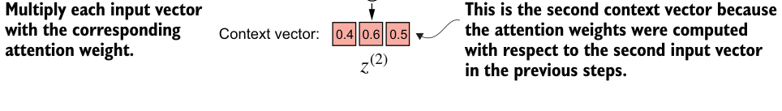
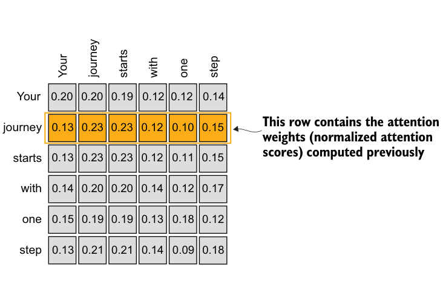
+
Next, we will generalize this procedure for computing context vectors to calculate all context vectors simultaneously.
3.3.2 Computing attention weights for all input tokens#
So far, we have computed attention weights and the context vector for input 2, as shown in the highlighted row in figure 3.11. Now let’s extend this computation to calculate attention weights and context vectors for all inputs.
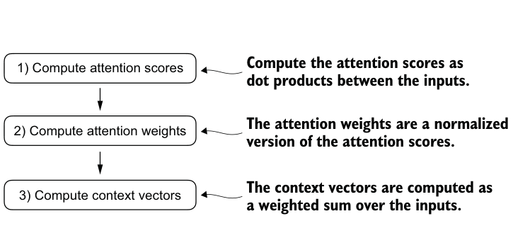
We follow the same three steps as before (see figure 3.12), except that we make a few modifications in the code to compute all context vectors instead of only the second one, z(2):
attn_scores = torch.empty(6, 6)
for i, x_i in enumerate(inputs):
for j, x_j in enumerate(inputs):
attn_scores[i, j] = torch.dot(x_i, x_j)
print(attn_scores)The resulting attention scores are as follows:
tensor([[0.9995, 0.9544, 0.9422, 0.4753, 0.4576, 0.6310],
[0.9544, 1.4950, 1.4754, 0.8434, 0.7070, 1.0865],
[0.9422, 1.4754, 1.4570, 0.8296, 0.7154, 1.0605],
[0.4753, 0.8434, 0.8296, 0.4937, 0.3474, 0.6565],
[0.4576, 0.7070, 0.7154, 0.3474, 0.6654, 0.2935],
[0.6310, 1.0865, 1.0605, 0.6565, 0.2935, 0.9450]])Each element in the tensor represents an attention score between each pair of inputs, as we saw in figure 3.11. Note that the values in that figure are normalized, which is why they differ from the unnormalized attention scores in the preceding tensor. We will take care of the normalization later.
When computing the preceding attention score tensor, we used for loops in Python. However, for loops are generally slow, and we can achieve the same results using matrix multiplication:
attn_scores = inputs @ inputs.T
print(attn_scores)We can visually confirm that the results are the same as before:
tensor([[0.9995, 0.9544, 0.9422, 0.4753, 0.4576, 0.6310],
[0.9544, 1.4950, 1.4754, 0.8434, 0.7070, 1.0865],
[0.9422, 1.4754, 1.4570, 0.8296, 0.7154, 1.0605],
[0.4753, 0.8434, 0.8296, 0.4937, 0.3474, 0.6565],
[0.4576, 0.7070, 0.7154, 0.3474, 0.6654, 0.2935],
[0.6310, 1.0865, 1.0605, 0.6565, 0.2935, 0.9450]])In step 2 of figure 3.12, we normalize each row so that the values in each row sum to 1:
attn_weights = torch.softmax(attn_scores, dim=-1)
print(attn_weights)This returns the following attention weight tensor that matches the values shown in figure 3.10:
tensor([[0.2098, 0.2006, 0.1981, 0.1242, 0.1220, 0.1452],
[0.1385, 0.2379, 0.2333, 0.1240, 0.1082, 0.1581],
[0.1390, 0.2369, 0.2326, 0.1242, 0.1108, 0.1565],
[0.1435, 0.2074, 0.2046, 0.1462, 0.1263, 0.1720],
[0.1526, 0.1958, 0.1975, 0.1367, 0.1879, 0.1295],
[0.1385, 0.2184, 0.2128, 0.1420, 0.0988, 0.1896]])In the context of using PyTorch, the dim parameter in functions like torch.softmax specifies the dimension of the input tensor along which the function will be computed. By setting dim=-1, we are instructing the softmax function to apply the normalization along the last dimension of the attn_scores tensor. If attn_scores is a two-dimensional tensor (for example, with a shape of [rows, columns]), it will normalize across the columns so that the values in each row (summing over the column dimension) sum up to 1.
We can verify that the rows indeed all sum to 1:
row_2_sum = sum([0.1385, 0.2379, 0.2333, 0.1240, 0.1082, 0.1581])
print("Row 2 sum:", row_2_sum)
print("All row sums:", attn_weights.sum(dim=-1))The result is
Row 2 sum: 1.0
All row sums: tensor([1.0000, 1.0000, 1.0000, 1.0000, 1.0000, 1.0000])In the third and final step of figure 3.12, we use these attention weights to compute all context vectors via matrix multiplication:
all_context_vecs = attn_weights @ inputs
print(all_context_vecs)In the resulting output tensor, each row contains a three-dimensional context vector:
tensor([[0.4421, 0.5931, 0.5790],
[0.4419, 0.6515, 0.5683],
[0.4431, 0.6496, 0.5671],
[0.4304, 0.6298, 0.5510],
[0.4671, 0.5910, 0.5266],
[0.4177, 0.6503, 0.5645]])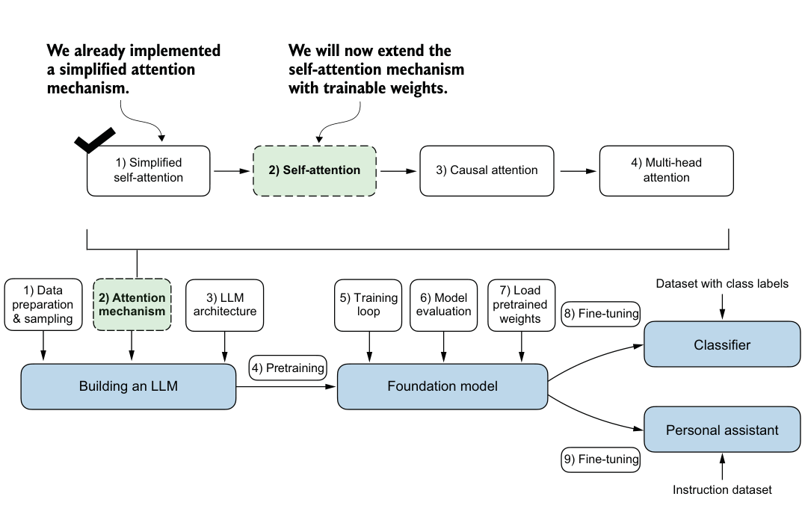
We can double-check that the code is correct by comparing the second row with the context vector z(2) that we computed in section 3.3.1:
print("Previous 2nd context vector:", context_vec_2)Based on the result, we can see that the previously calculated context_vec_2 matches the second row in the previous tensor exactly:
Previous 2nd context vector: tensor([0.4419, 0.6515, 0.5683])This concludes the code walkthrough of a simple self-attention mechanism. Next, we will add trainable weights, enabling the LLM to learn from data and improve its performance on specific tasks.
3.4 Implementing self-attention with trainable weights#
Our next step will be to implement the self-attention mechanism used in the original transformer architecture, the GPT models, and most other popular LLMs. This self-attention mechanism is also called scaled dot-product attention. Figure 3.13 shows how this self-attention mechanism fits into the broader context of implementing an LLM.
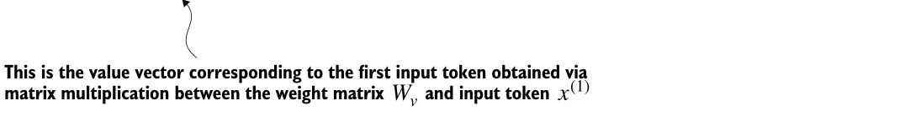
As illustrated in figure 3.13, the self-attention mechanism with trainable weights builds on the previous concepts: we want to compute context vectors as weighted sums over the input vectors specific to a certain input element. As you will see, there are only slight differences compared to the basic self-attention mechanism we coded earlier.
The most notable difference is the introduction of weight matrices that are updated during model training. These trainable weight matrices are crucial so that the model (specifically, the attention module inside the model) can learn to produce “good” context vectors. (We will train the LLM in chapter 5.)
We will tackle this self-attention mechanism in the two subsections. First, we will code it step by step as before. Second, we will organize the code into a compact Python class that can be imported into the LLM architecture.
3.4.1 Computing the attention weights step by step#
We will implement the self-attention mechanism step by step by introducing the three trainable weight matrices Wq, Wk, and Wv. These three matrices are used to project the embedded input tokens, x(i), into query, key, and value vectors, respectively, as illustrated in figure 3.14.
key
value
Earlier, we defined the second input element x(2) as the query when we computed the simplified attention weights to compute the context vector z(2). Then we generalized this to compute all context vectors z(1) ... z(T) for the six-word input sentence “Your journey starts with one step.”
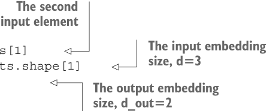
Similarly, we start here by computing only one context vector, z(2), for illustration purposes. We will then modify this code to calculate all context vectors.
Let’s begin by defining a few variables:
代码旁注 4 条
- The second
- input element
- The input embedding
- The output embedding size, d_out=2
x_2 = inputs[1] d_in = inputs.shape[1] size, d=3
d_out = 2Note that in GPT-like models, the input and output dimensions are usually the same, but to better follow the computation, we’ll use different input (d_in=3) and output (d_out=2) dimensions here.
Next, we initialize the three weight matrices Wq, Wk, and Wv shown in figure 3.14:
torch.manual_seed(123)
W_query = torch.nn.Parameter(torch.rand(d_in, d_out), requires_grad=False)
W_key = torch.nn.Parameter(torch.rand(d_in, d_out), requires_grad=False)
W_value = torch.nn.Parameter(torch.rand(d_in, d_out), requires_grad=False)We set requires_grad=False to reduce clutter in the outputs, but if we were to use the weight matrices for model training, we would set requires_grad=True to update these matrices during model training.
Next, we compute the query, key, and value vectors:
query_2 = x_2 @ W_query
key_2 = x_2 @ W_key
value_2 = x_2 @ W_value
print(query_2)The output for the query results in a two-dimensional vector since we set the number of columns of the corresponding weight matrix, via d_out, to 2:
tensor([0.4306, 1.4551])Weight parameters vs. attention weights #
In the weight matrices W, the term “weight” is short for “weight parameters,” the val-
ues of a neural network that are optimized during training. This is not to be confused
with the attention weights. As we already saw, attention weights determine the extent
to which a context vector depends on the different parts of the input (i.e., to what
extent the network focuses on different parts of the input).
In summary, weight parameters are the fundamental, learned coefficients that define
the network’s connections, while attention weights are dynamic, context-specific values.
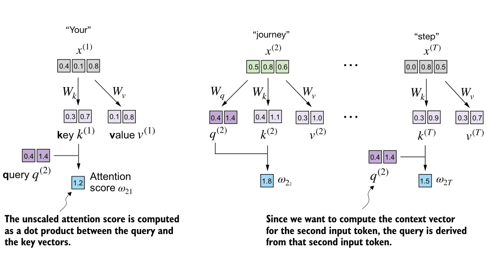
Even though our temporary goal is only to compute the one context vector, z(2), we still require the key and value vectors for all input elements as they are involved in computing the attention weights with respect to the query q(2) (see figure 3.14).
We can obtain all keys and values via matrix multiplication:
keys = inputs @ W_key
values = inputs @ W_value
print("keys.shape:", keys.shape)
print("values.shape:", values.shape)As we can tell from the outputs, we successfully projected the six input tokens from a three-dimensional onto a two-dimensional embedding space:
keys.shape: torch.Size([6, 2])
values.shape: torch.Size([6, 2])The second step is to compute the attention scores, as shown in figure 3.15.
First, let’s compute the attention score ω22:
代码旁注 1 条
- Remember that Python starts indexing at 0.
keys_2 = keys[1]
attn_score_22 = query_2.dot(keys_2)
print(attn_score_22)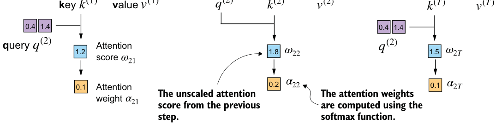
The result for the unnormalized attention score is
tensor(1.8524)
Again, we can generalize this computation to all attention scores via matrix multiplication:
代码旁注 1 条
- All attention scores for given query
attn_scores_2 = query_2 @ keys.T
print(attn_scores_2)As we can see, as a quick check, the second element in the output matches the attn_score_22 we computed previously:
tensor([1.2705, 1.8524, 1.8111, 1.0795, 0.5577, 1.5440])Now, we want to go from the attention scores to the attention weights, as illustrated in figure 3.16. We compute the attention weights by scaling the attention scores and using the softmax function. However, now we scale the attention scores by dividing them by the square root of the embedding dimension of the keys (taking the square root is mathematically the same as exponentiating by 0.5):
d_k = keys.shape[-1]
attn_weights_2 = torch.softmax(attn_scores_2 / d_k**0.5, dim=-1)
print(attn_weights_2)key
value
query q(2)
q(2)
After computing the attention scores , the next step is to normalize these scores using the Figure 3.16 softmax function to obtain the attention weights .
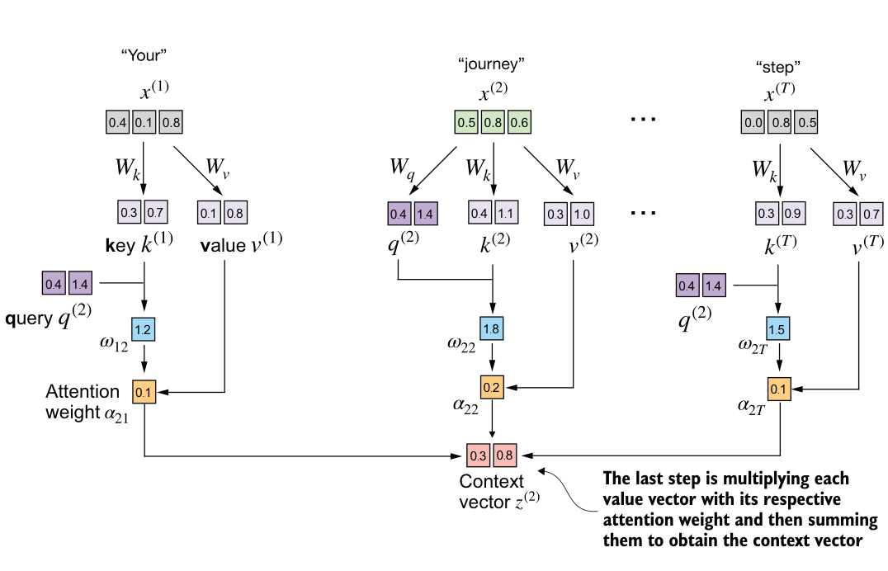
The resulting attention weights are
tensor([0.1500, 0.2264, 0.2199, 0.1311, 0.0906, 0.1820])The rationale behind scaled-dot product attention#
The reason for the normalization by the embedding dimension size is to improve the
training performance by avoiding small gradients. For instance, when scaling up the
embedding dimension, which is typically greater than 1,000 for GPT-like LLMs, large
dot products can result in very small gradients during backpropagation due to the
softmax function applied to them. As dot products increase, the softmax function
behaves more like a step function, resulting in gradients nearing zero. These small
gradients can drastically slow down learning or cause training to stagnate.
The scaling by the square root of the embedding dimension is the reason why this
self-attention mechanism is also called scaled-dot product attention.
Now, the final step is to compute the context vectors, as illustrated in figure 3.17.
Similar to when we computed the context vector as a weighted sum over the input vectors (see section 3.3), we now compute the context vector as a weighted sum over the value vectors. Here, the attention weights serve as a weighting factor that weighs
Listing 3.1A compact self-attention class
the respective importance of each value vector. Also as before, we can use matrix multiplication to obtain the output in one step:
context_vec_2 = attn_weights_2 @ values
print(context_vec_2)The contents of the resulting vector are as follows:
tensor([0.3061, 0.8210])So far, we’ve only computed a single context vector, z(2). Next, we will generalize the code to compute all context vectors in the input sequence, z(1) to z(T).
Why query, key, and value?#
The terms “key,” “query,” and “value” in the context of attention mechanisms are
borrowed from the domain of information retrieval and databases, where similar con-
cepts are used to store, search, and retrieve information.
A query is analogous to a search query in a database. It represents the current item
(e.g., a word or token in a sentence) the model focuses on or tries to understand.
The query is used to probe the other parts of the input sequence to determine how
much attention to pay to them.
The key is like a database key used for indexing and searching. In the attention mech-
anism, each item in the input sequence (e.g., each word in a sentence) has an asso-
ciated key. These keys are used to match the query.
The value in this context is similar to the value in a key-value pair in a database. It
represents the actual content or representation of the input items. Once the model
determines which keys (and thus which parts of the input) are most relevant to the
query (the current focus item), it retrieves the corresponding values.
3.4.2 Implementing a compact self-attention Python class#
At this point, we have gone through a lot of steps to compute the self-attention outputs. We did so mainly for illustration purposes so we could go through one step at a time. In practice, with the LLM implementation in the next chapter in mind, it is helpful to organize this code into a Python class, as shown in the following listing.
import torch.nn as nn
class SelfAttention_v1(nn.Module):
def __init__(self, d_in, d_out):
super().__init__()
self.W_query = nn.Parameter(torch.rand(d_in, d_out))
self.W_key = nn.Parameter(torch.rand(d_in, d_out))
self.W_value = nn.Parameter(torch.rand(d_in, d_out))
def forward(self, x):
keys = x @ self.W_key
queries = x @ self.W_query
values = x @ self.W_value
attn_scores = queries @ keys.T # omega
attn_weights = torch.softmax(
attn_scores / keys.shape[-1]**0.5, dim=-1
)
context_vec = attn_weights @ values
return context_vecIn this PyTorch code, SelfAttention_v1 is a class derived from nn.Module, which is a fundamental building block of PyTorch models that provides necessary functionalities for model layer creation and management.
The __init__ method initializes trainable weight matrices (W_query, W_key, and W_value) for queries, keys, and values, each transforming the input dimension d_in to an output dimension d_out.
During the forward pass, using the forward method, we compute the attention scores (attn_scores) by multiplying queries and keys, normalizing these scores using softmax. Finally, we create a context vector by weighting the values with these normalized attention scores.
We can use this class as follows:
torch.manual_seed(123)
sa_v1 = SelfAttention_v1(d_in, d_out)
print(sa_v1(inputs))Since inputs contains six embedding vectors, this results in a matrix storing the six context vectors:
tensor([[0.2996, 0.8053],
[0.3061, 0.8210],
[0.3058, 0.8203],
[0.2948, 0.7939],
[0.2927, 0.7891],
[0.2990, 0.8040]], grad_fn=<MmBackward0>)As a quick check, notice that the second row ([0.3061, 0.8210]) matches the contents of context_vec_2 in the previous section. Figure 3.18 summarizes the self-attention mechanism we just implemented.
Self-attention involves the trainable weight matrices Wq, Wk, and Wv. These matrices transform input data into queries, keys, and values, respectively, which are crucial components of the attention mechanism. As the model is exposed to more data during training, it adjusts these trainable weights, as we will see in upcoming chapters.
We can improve the SelfAttention_v1 implementation further by utilizing PyTorch’s nn.Linear layers, which effectively perform matrix multiplication when the bias units are disabled. Additionally, a significant advantage of using nn.Linear
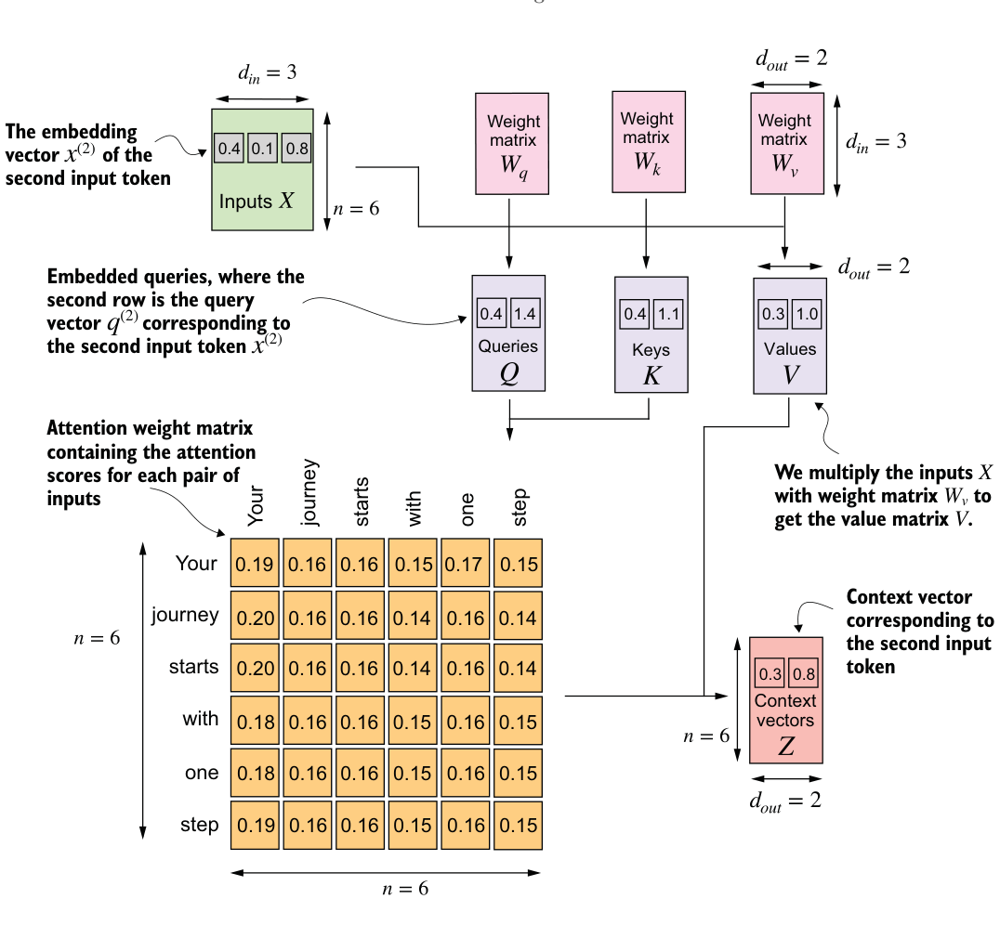
Listing 3.2A self-attention class using PyTorch’s Linear layers
instead of manually implementing nn.Parameter(torch.rand(...)) is that nn.Linear has an optimized weight initialization scheme, contributing to more stable and effective model training.
class SelfAttention_v2(nn.Module):
def __init__(self, d_in, d_out, qkv_bias=False):
super().__init__()
self.W_query = nn.Linear(d_in, d_out, bias=qkv_bias)
self.W_key = nn.Linear(d_in, d_out, bias=qkv_bias)
self.W_value = nn.Linear(d_in, d_out, bias=qkv_bias)
def forward(self, x):
keys = self.W_key(x)
queries = self.W_query(x)
values = self.W_value(x)
attn_scores = queries @ keys.T
attn_weights = torch.softmax(
attn_scores / keys.shape[-1]**0.5, dim=-1
)
context_vec = attn_weights @ values
return context_vec
You can use the SelfAttention_v2 similar to SelfAttention_v1:
torch.manual_seed(789)
sa_v2 = SelfAttention_v2(d_in, d_out)
print(sa_v2(inputs))The output is
tensor([[-0.0739, 0.0713],
[-0.0748, 0.0703],
[-0.0749, 0.0702],
[-0.0760, 0.0685],
[-0.0763, 0.0679],
[-0.0754, 0.0693]], grad_fn=<MmBackward0>)Note that SelfAttention_v1 and SelfAttention_v2 give different outputs because they use different initial weights for the weight matrices since nn.Linear uses a more sophisticated weight initialization scheme.
Exercise 3.1 Comparing SelfAttention_v1 and SelfAttention_v2#
Note that nn.Linear in SelfAttention_v2 uses a different weight initialization
scheme as nn.Parameter(torch.rand(d_in, d_out)) used in SelfAttention_v1,which causes both mechanisms to produce different results. To check that both
implementations, SelfAttention_v1 and SelfAttention_v2, are otherwise simi-
lar, we can transfer the weight matrices from a SelfAttention_v2 object to a Self-
Attention_v1, such that both objects then produce the same results.
Your task is to correctly assign the weights from an instance of SelfAttention_v2
to an instance of SelfAttention_v1. To do this, you need to understand the rela-
tionship between the weights in both versions. (Hint: nn.Linear stores the weight
matrix in a transposed form.) After the assignment, you should observe that both
instances produce the same outputs.
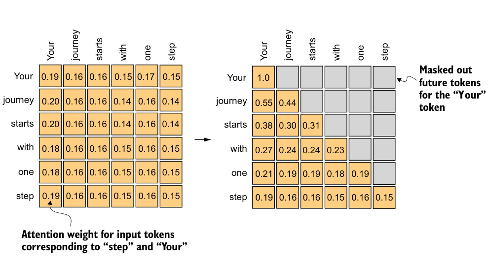
Next, we will make enhancements to the self-attention mechanism, focusing specifically on incorporating causal and multi-head elements. The causal aspect involves modifying the attention mechanism to prevent the model from accessing future information in the sequence, which is crucial for tasks like language modeling, where each word prediction should only depend on previous words.
The multi-head component involves splitting the attention mechanism into multiple “heads.” Each head learns different aspects of the data, allowing the model to simultaneously attend to information from different representation subspaces at different positions. This improves the model’s performance in complex tasks.
3.5 Hiding future words with causal attention#
For many LLM tasks, you will want the self-attention mechanism to consider only the tokens that appear prior to the current position when predicting the next token in a sequence. Causal attention, also known as masked attention, is a specialized form of selfattention. It restricts a model to only consider previous and current inputs in a sequence when processing any given token when computing attention scores. This is in contrast to the standard self-attention mechanism, which allows access to the entire input sequence at once.
Now, we will modify the standard self-attention mechanism to create a causal attention mechanism, which is essential for developing an LLM in the subsequent chapters. To achieve this in GPT-like LLMs, for each token processed, we mask out the future tokens, which come after the current token in the input text, as illustrated in figure 3.19. We mask out the attention weights above the diagonal, and we
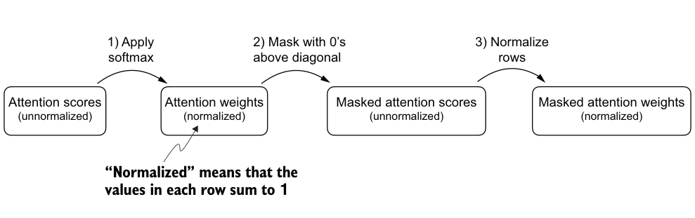
normalize the nonmasked attention weights such that the attention weights sum to 1 in each row. Later, we will implement this masking and normalization procedure in code.
3.5.1 Applying a causal attention mask#
Our next step is to implement the causal attention mask in code. To implement the steps to apply a causal attention mask to obtain the masked attention weights, as summarized in figure 3.20, let’s work with the attention scores and weights from the previous section to code the causal attention mechanism.
In the first step, we compute the attention weights using the softmax function as we have done previously:
代码旁注 1 条
- Reuses the query and key weight matrices of the SelfAttention_v2 object from the previous section for convenience
queries = sa_v2.W_query(inputs)
keys = sa_v2.W_key(inputs)
attn_scores = queries @ keys.T
attn_weights = torch.softmax(attn_scores / keys.shape[-1]**0.5, dim=-1)
print(attn_weights)This results in the following attention weights:
tensor([[0.1921, 0.1646, 0.1652, 0.1550, 0.1721, 0.1510],
[0.2041, 0.1659, 0.1662, 0.1496, 0.1665, 0.1477],
[0.2036, 0.1659, 0.1662, 0.1498, 0.1664, 0.1480],
[0.1869, 0.1667, 0.1668, 0.1571, 0.1661, 0.1564],
[0.1830, 0.1669, 0.1670, 0.1588, 0.1658, 0.1585],
[0.1935, 0.1663, 0.1666, 0.1542, 0.1666, 0.1529]],
grad_fn=<SoftmaxBackward0>)We can implement the second step using PyTorch’s tril function to create a mask where the values above the diagonal are zero:
context_length = attn_scores.shape[0]
mask_simple = torch.tril(torch.ones(context_length, context_length))
print(mask_simple)The resulting mask is
tensor([[1., 0., 0., 0., 0., 0.],
[1., 1., 0., 0., 0., 0.],
[1., 1., 1., 0., 0., 0.],
[1., 1., 1., 1., 0., 0.],
[1., 1., 1., 1., 1., 0.],
[1., 1., 1., 1., 1., 1.]])Now, we can multiply this mask with the attention weights to zero-out the values above the diagonal:
masked_simple = attn_weights*mask_simple
print(masked_simple)As we can see, the elements above the diagonal are successfully zeroed out:
tensor([[0.1921, 0.0000, 0.0000, 0.0000, 0.0000, 0.0000],
[0.2041, 0.1659, 0.0000, 0.0000, 0.0000, 0.0000],
[0.2036, 0.1659, 0.1662, 0.0000, 0.0000, 0.0000],
[0.1869, 0.1667, 0.1668, 0.1571, 0.0000, 0.0000],
[0.1830, 0.1669, 0.1670, 0.1588, 0.1658, 0.0000],
[0.1935, 0.1663, 0.1666, 0.1542, 0.1666, 0.1529]],
grad_fn=<MulBackward0>)The third step is to renormalize the attention weights to sum up to 1 again in each row. We can achieve this by dividing each element in each row by the sum in each row:
row_sums = masked_simple.sum(dim=-1, keepdim=True)
masked_simple_norm = masked_simple / row_sums
print(masked_simple_norm)The result is an attention weight matrix where the attention weights above the diagonal are zeroed-out, and the rows sum to 1:
tensor([[1.0000, 0.0000, 0.0000, 0.0000, 0.0000, 0.0000],
[0.5517, 0.4483, 0.0000, 0.0000, 0.0000, 0.0000],
[0.3800, 0.3097, 0.3103, 0.0000, 0.0000, 0.0000],
[0.2758, 0.2460, 0.2462, 0.2319, 0.0000, 0.0000],
[0.2175, 0.1983, 0.1984, 0.1888, 0.1971, 0.0000],
[0.1935, 0.1663, 0.1666, 0.1542, 0.1666, 0.1529]],
grad_fn=<DivBackward0>)Information leakage#
When we apply a mask and then renormalize the attention weights, it might initially
appear that information from future tokens (which we intend to mask) could still influ-
ence the current token because their values are part of the softmax calculation. How-
ever, the key insight is that when we renormalize the attention weights after masking,
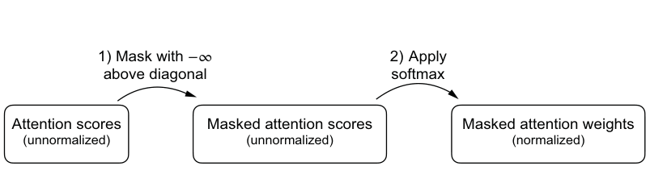
what we’re essentially doing is recalculating the softmax over a smaller subset (since
masked positions don’t contribute to the softmax value).
The mathematical elegance of softmax is that despite initially including all positions
in the denominator, after masking and renormalizing, the effect of the masked posi-
tions is nullified—they don’t contribute to the softmax score in any meaningful way.
In simpler terms, after masking and renormalization, the distribution of attention
weights is as if it was calculated only among the unmasked positions to begin with.
This ensures there’s no information leakage from future (or otherwise masked)
tokens as we intended.
While we could wrap up our implementation of causal attention at this point, we can still improve it. Let’s take a mathematical property of the softmax function and implement the computation of the masked attention weights more efficiently in fewer steps, as shown in figure 3.21.
The softmax function converts its inputs into a probability distribution. When negative infinity values (-∞) are present in a row, the softmax function treats them as zero probability. (Mathematically, this is because e –∞ approaches 0.)
We can implement this more efficient masking “trick” by creating a mask with 1s above the diagonal and then replacing these 1s with negative infinity (-inf) values:
mask = torch.triu(torch.ones(context_length, context_length), diagonal=1)
masked = attn_scores.masked_fill(mask.bool(), -torch.inf)
print(masked)This results in the following mask:
tensor([[0.2899, -inf, -inf, -inf, -inf, -inf],
[0.4656, 0.1723, -inf, -inf, -inf, -inf],
[0.4594, 0.1703, 0.1731, -inf, -inf, -inf],
[0.2642, 0.1024, 0.1036, 0.0186, -inf, -inf],
[0.2183, 0.0874, 0.0882, 0.0177, 0.0786, -inf],
[0.3408, 0.1270, 0.1290, 0.0198, 0.1290, 0.0078]],
grad_fn=<MaskedFillBackward0>)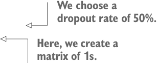
Now all we need to do is apply the softmax function to these masked results, and we are done:
attn_weights = torch.softmax(masked / keys.shape[-1]**0.5, dim=1)
print(attn_weights)As we can see based on the output, the values in each row sum to 1, and no further normalization is necessary:
tensor([[1.0000, 0.0000, 0.0000, 0.0000, 0.0000, 0.0000],
[0.5517, 0.4483, 0.0000, 0.0000, 0.0000, 0.0000],
[0.3800, 0.3097, 0.3103, 0.0000, 0.0000, 0.0000],
[0.2758, 0.2460, 0.2462, 0.2319, 0.0000, 0.0000],
[0.2175, 0.1983, 0.1984, 0.1888, 0.1971, 0.0000],
[0.1935, 0.1663, 0.1666, 0.1542, 0.1666, 0.1529]],
grad_fn=<SoftmaxBackward0>)We could now use the modified attention weights to compute the context vectors via context_vec = attn_weights @ values, as in section 3.4. However, we will first cover another minor tweak to the causal attention mechanism that is useful for reducing overfitting when training LLMs.
3.5.2 Masking additional attention weights with dropout#
Dropout in deep learning is a technique where randomly selected hidden layer units are ignored during training, effectively “dropping” them out. This method helps prevent overfitting by ensuring that a model does not become overly reliant on any specific set of hidden layer units. It’s important to emphasize that dropout is only used during training and is disabled afterward.
In the transformer architecture, including models like GPT, dropout in the attention mechanism is typically applied at two specific times: after calculating the attention weights or after applying the attention weights to the value vectors. Here we will apply the dropout mask after computing the attention weights, as illustrated in figure 3.22, because it’s the more common variant in practice.
In the following code example, we use a dropout rate of 50%, which means masking out half of the attention weights. (When we train the GPT model in later chapters, we will use a lower dropout rate, such as 0.1 or 0.2.) We apply PyTorch’s dropout implementation first to a 6 × 6 tensor consisting of 1s for simplicity:
代码旁注 2 条
- We choose a dropout rate of 50%.
- Here, we create a matrix of 1s.
torch.manual_seed(123)dropout = torch.nn.Dropout(0.5)
example = torch.ones(6, 6)
print(dropout(example))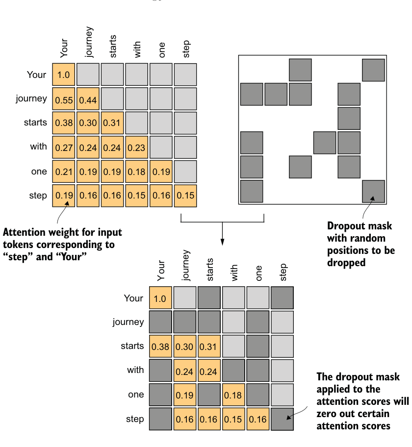
As we can see, approximately half of the values are zeroed out:
tensor([[2., 2., 0., 2., 2., 0.],
[0., 0., 0., 2., 0., 2.],
[2., 2., 2., 2., 0., 2.],
[0., 2., 2., 0., 0., 2.],
[0., 2., 0., 2., 0., 2.],
[0., 2., 2., 2., 2., 0.]])When applying dropout to an attention weight matrix with a rate of 50%, half of the elements in the matrix are randomly set to zero. To compensate for the reduction in active elements, the values of the remaining elements in the matrix are scaled up by a factor of 1/0.5 = 2. This scaling is crucial to maintain the overall balance of the atten-
consistent during both the training and inference phases.
Now let’s apply dropout to the attention weight matrix itself:
torch.manual_seed(123)
print(dropout(attn_weights))The resulting attention weight matrix now has additional elements zeroed out and the remaining 1s rescaled:
tensor([[2.0000, 0.0000, 0 .0000, 0.0000, 0.0000, 0.0000],
[0.0000, 0.0000, 0.0000, 0.0000, 0.0000, 0.0000],
[0.7599, 0.6194, 0.6206, 0.0000, 0.0000, 0.0000],
[0.0000, 0.4921, 0.4925, 0.0000, 0.0000, 0.0000],
[0.0000, 0.3966, 0.0000, 0.3775, 0.0000, 0.0000],
[0.0000, 0.3327, 0.3331, 0.3084, 0.3331, 0.0000]],
grad_fn=<MulBackward0>Note that the resulting dropout outputs may look different depending on your operating system; you can read more about this inconsistency here on the PyTorch issue tracker at https://github.com/pytorch/pytorch/issues/121595.
Having gained an understanding of causal attention and dropout masking, we can now develop a concise Python class. This class is designed to facilitate the efficient application of these two techniques.
3.5.3 Implementing a compact causal attention class#
We will now incorporate the causal attention and dropout modifications into the SelfAttention Python class we developed in section 3.4. This class will then serve as a template for developing multi-head attention, which is the final attention class we will implement.
But before we begin, let’s ensure that the code can handle batches consisting of more than one input so that the CausalAttention class supports the batch outputs produced by the data loader we implemented in chapter 2.
For simplicity, to simulate such batch inputs, we duplicate the input text example:
代码旁注 1 条
- Two inputs with six tokens each; each
batch = torch.stack((inputs, inputs), dim=0)print(batch.shape) token has embedding dimension 3.This results in a three-dimensional tensor consisting of two input texts with six tokens each, where each token is a three-dimensional embedding vector:
torch.Size([2, 6, 3])The following CausalAttention class is similar to the SelfAttention class we implemented earlier, except that we added the dropout and causal mask components.
Listing 3.3A compact causal attention class
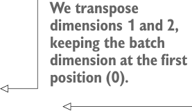
代码旁注 2 条
- Compared to the previous SelfAttention_v1 class, we added a dropout layer.
- The register_buffer call is also a new addition (more information is provided in the following text).
class CausalAttention(nn.Module):
def __init__(self, d_in, d_out, context_length,
dropout, qkv_bias=False):
super().__init__()
self.d_out = d_out
self.W_query = nn.Linear(d_in, d_out, bias=qkv_bias)
self.W_key = nn.Linear(d_in, d_out, bias=qkv_bias)
self.W_value = nn.Linear(d_in, d_out, bias=qkv_bias)
self.dropout = nn.Dropout(dropout)
self.register_buffer(
'mask',
torch.triu(torch.ones(context_length, context_length),
diagonal=1)
)
def forward(self, x):
b, num_tokens, d_in = x.shape代码旁注 3 条
- We transpose dimensions 1 and 2, keeping the batch dimension at the first position (0).
- In PyTorch, operations
- with a trailing underscore are performed in-place, avoiding unnecessary memory copies.
keys = self.W_key(x)
queries = self.W_query(x)
values = self.W_value(x)
attn_scores = queries @ keys.transpose(1, 2)
attn_scores.masked_fill_(
self.mask.bool()[:num_tokens, :num_tokens], -torch.inf)
attn_weights = torch.softmax(
attn_scores / keys.shape[-1]**0.5, dim=-1
)
attn_weights = self.dropout(attn_weights)
context_vec = attn_weights @ values
return context_vecWhile all added code lines should be familiar at this point, we now added a self
.register_buffer() call in the __init__ method. The use of register_buffer in
PyTorch is not strictly necessary for all use cases but offers several advantages here. For instance, when we use the CausalAttention class in our LLM, buffers are automatically moved to the appropriate device (CPU or GPU) along with our model, which will be relevant when training our LLM. This means we don’t need to manually ensure these tensors are on the same device as your model parameters, avoiding device mismatch errors.
We can use the CausalAttention class as follows, similar to SelfAttention previously:
torch.manual_seed(123)
context_length = batch.shape[1]
ca = CausalAttention(d_in, d_out, context_length, 0.0)
context_vecs = ca(batch)
print("context_vecs.shape:", context_vecs.shape)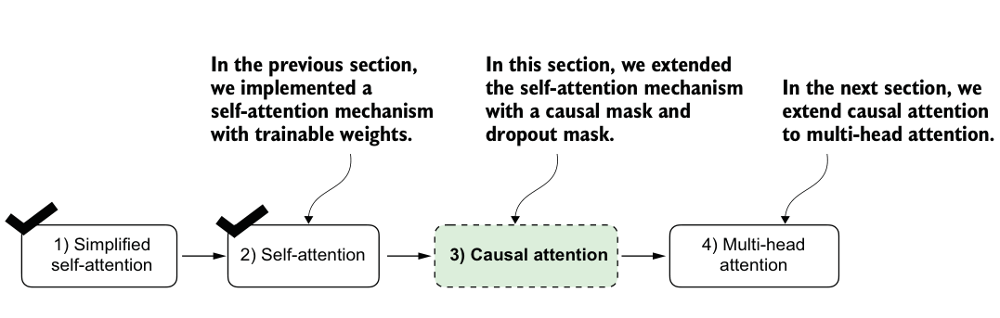
The resulting context vector is a three-dimensional tensor where each token is now represented by a two-dimensional embedding:
context_vecs.shape: torch.Size([2, 6, 2])Figure 3.23 summarizes what we have accomplished so far. We have focused on the concept and implementation of causal attention in neural networks. Next, we will expand on this concept and implement a multi-head attention module that implements several causal attention mechanisms in parallel.
3.6 Extending single-head attention to multi-head attention#
Our final step will be to extend the previously implemented causal attention class over multiple heads. This is also called multi-head attention.
The term “multi-head” refers to dividing the attention mechanism into multiple “heads,” each operating independently. In this context, a single causal attention module can be considered single-head attention, where there is only one set of attention weights processing the input sequentially.
We will tackle this expansion from causal attention to multi-head attention. First, we will intuitively build a multi-head attention module by stacking multiple Causal- Attention modules. Then we will then implement the same multi-head attention module in a more complicated but more computationally efficient way.
3.6.1 Stacking multiple single-head attention layers#
In practical terms, implementing multi-head attention involves creating multiple instances of the self-attention mechanism (see figure 3.18), each with its own weights, and then combining their outputs. Using multiple instances of the self-attention mechanism can be computationally intensive, but it’s crucial for the kind of complex pattern recognition that models like transformer-based LLMs are known for.
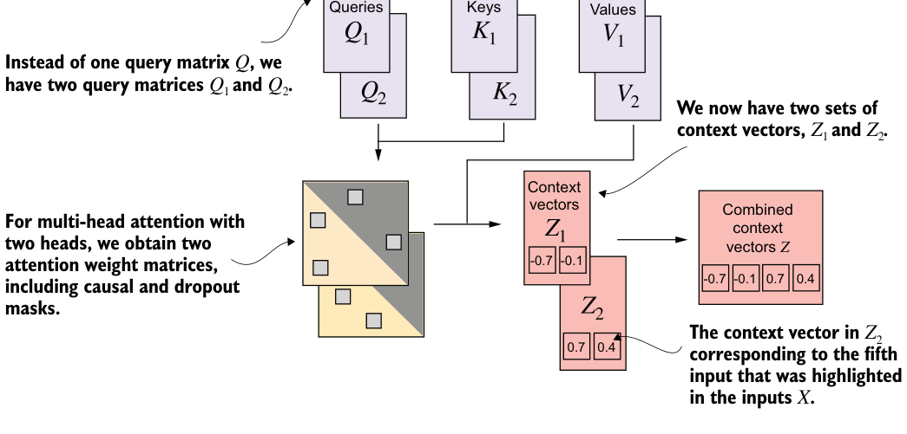
Figure 3.24 illustrates the structure of a multi-head attention module, which consists of multiple single-head attention modules, as previously depicted in figure 3.18, stacked on top of each other.
Inputs
Wv2.
Q2.
Z2.
Figure 3.24 The multi-head attention module includes two single-head attention modules stacked on top of each other. So, instead of using a single matrix Wv for computing the value matrices, in a multi-head attention module with two heads, we now have two value weight matrices: Wv1 and Wv2. The same applies to the other weight matrices, WQ and Wk. We obtain two sets of context vectors Z1 and Z2 that we can combine into a single context vector matrix Z.
As mentioned before, the main idea behind multi-head attention is to run the attention mechanism multiple times (in parallel) with different, learned linear projections—the results of multiplying the input data (like the query, key, and value vectors in attention mechanisms) by a weight matrix. In code, we can achieve this by implementing a simple MultiHeadAttentionWrapper class that stacks multiple instances of our previously implemented CausalAttention module.
Listing 3.4A wrapper class to implement multi-head attention
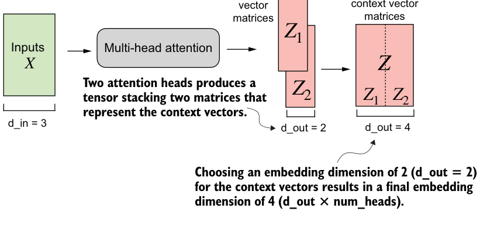
class MultiHeadAttentionWrapper(nn.Module):
def __init__(self, d_in, d_out, context_length,
dropout, num_heads, qkv_bias=False):
super().__init__()
self.heads = nn.ModuleList(
[CausalAttention(
d_in, d_out, context_length, dropout, qkv_bias
)
for _ in range(num_heads)]
)
def forward(self, x):
return torch.cat([head(x) for head in self.heads], dim=-1)For example, if we use this MultiHeadAttentionWrapper class with two attention heads (via num_heads=2) and CausalAttention output dimension d_out=2, we get a fourdimensional context vector (d_out*num_heads=4), as depicted in figure 3.25.
Z
Z1 Z2
Using the MultiHeadAttentionWrapper, we specified the number of Figure 3.25 attention heads (num_heads). If we set num_heads=2, as in this example, we obtain a tensor with two sets of context vector matrices. In each context vector matrix, the rows represent the context vectors corresponding to the tokens, and the columns correspond to the embedding dimension specified via d_out=4. We concatenate these context vector matrices along the column dimension. Since we have two attention heads and an embedding dimension of 2, the final embedding dimension is 2 × 2 = 4.
To illustrate this further with a concrete example, we can use the MultiHeadAttention- Wrapper class similar to the CausalAttention class before:
torch.manual_seed(123)
context_length = batch.shape[1] # This is the number of tokens
d_in, d_out = 3, 2
mha = MultiHeadAttentionWrapper(
d_in, d_out, context_length, 0.0, num_heads=2
)
context_vecs = mha(batch)
print(context_vecs)
print("context_vecs.shape:", context_vecs.shape)This results in the following tensor representing the context vectors:
tensor([[[-0.4519, 0.2216, 0.4772, 0.1063],
[-0.5874, 0.0058, 0.5891, 0.3257],
[-0.6300, -0.0632, 0.6202, 0.3860],
[-0.5675, -0.0843, 0.5478, 0.3589],
[-0.5526, -0.0981, 0.5321, 0.3428],
[-0.5299, -0.1081, 0.5077, 0.3493]],
[[-0.4519, 0.2216, 0.4772, 0.1063],
[-0.5874, 0.0058, 0.5891, 0.3257],
[-0.6300, -0.0632, 0.6202, 0.3860],
[-0.5675, -0.0843, 0.5478, 0.3589],
[-0.5526, -0.0981, 0.5321, 0.3428],
[-0.5299, -0.1081, 0.5077, 0.3493]]], grad_fn=<CatBackward0>)
context_vecs.shape: torch.Size([2, 6, 4])The first dimension of the resulting context_vecs tensor is 2 since we have two input texts (the input texts are duplicated, which is why the context vectors are exactly the same for those). The second dimension refers to the 6 tokens in each input. The third dimension refers to the four-dimensional embedding of each token.
Exercise 3.2 Returning two-dimensional embedding vectors #
Change the input arguments for the MultiHeadAttentionWrapper(..., num_
heads=2) call such that the output context vectors are two-dimensional instead of
four dimensional while keeping the setting num_heads=2. Hint: You don’t have to
modify the class implementation; you just have to change one of the other input
arguments.
Up to this point, we have implemented a MultiHeadAttentionWrapper that combined multiple single-head attention modules. However, these are processed sequentially via [head(x) for head in self.heads] in the forward method. We can improve this implementation by processing the heads in parallel. One way to achieve this is by computing the outputs for all attention heads simultaneously via matrix multiplication.
Listing 3.5An efficient multi-head attention class
3.6.2 Implementing multi-head attention with weight splits#
So far, we have created a MultiHeadAttentionWrapper to implement multi-head attention by stacking multiple single-head attention modules. This was done by instantiating and combining several CausalAttention objects.
Instead of maintaining two separate classes, MultiHeadAttentionWrapper and CausalAttention, we can combine these concepts into a single MultiHeadAttention class. Also, in addition to merging the MultiHeadAttentionWrapper with the Causal- Attention code, we will make some other modifications to implement multi-head attention more efficiently.
In the MultiHeadAttentionWrapper, multiple heads are implemented by creating a list of CausalAttention objects (self.heads), each representing a separate attention head. The CausalAttention class independently performs the attention mechanism, and the results from each head are concatenated. In contrast, the following MultiHeadAttention class integrates the multi-head functionality within a single class. It splits the input into multiple heads by reshaping the projected query, key, and value tensors and then combines the results from these heads after computing attention.
Let’s take a look at the MultiHeadAttention class before we discuss it further.
代码旁注 3 条
- Reduces the projection dim to match the desired output dim
- Uses a Linear layer to combine head outputs
- Tensor shape: (b, num_tokens, d_out)
class MultiHeadAttention(nn.Module):
def __init__(self, d_in, d_out,
context_length, dropout, num_heads, qkv_bias=False):
super().__init__()
assert (d_out % num_heads == 0), \
"d_out must be divisible by num_heads"
self.d_out = d_out
self.num_heads = num_heads
self.head_dim = d_out // num_heads
self.W_query = nn.Linear(d_in, d_out, bias=qkv_bias)
self.W_key = nn.Linear(d_in, d_out, bias=qkv_bias)
self.W_value = nn.Linear(d_in, d_out, bias=qkv_bias)
self.out_proj = nn.Linear(d_out, d_out)
self.dropout = nn.Dropout(dropout)
self.register_buffer(
"mask",
torch.triu(torch.ones(context_length, context_length),
diagonal=1)
)
def forward(self, x):
b, num_tokens, d_in = x.shape
keys = self.W_key(x)
queries = self.W_query(x)
values = self.W_value(x)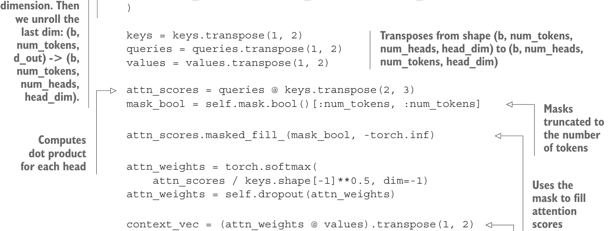
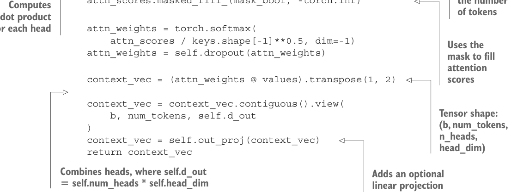
代码旁注 2 条
- We implicitly
- split the matrix by adding a num_heads
keys = keys.view(b, num_tokens, self.num_heads, self.head_dim)
values = values.view(b, num_tokens, self.num_heads, self.head_dim)
queries = queries.view(
b, num_tokens, self.num_heads, self.head_dim代码旁注 7 条
- dimension. Then we unroll the )
- last dim: (b, Transposes from shape (b, num_tokens,
- num_tokens, num_heads, head_dim) to (b, num_heads,
- d_out) -> (b, num_tokens, head_dim)
- num_tokens, num_heads,
- Masks truncated to the number
- dot productComputes of tokens
keys = keys.transpose(1, 2)
queries = queries.transpose(1, 2)
values = values.transpose(1, 2)
head_dim). attn_scores = queries @ keys.transpose(2, 3) mask_bool = self.mask.bool()[:num_tokens, :num_tokens]
attn_scores.masked_fill_(mask_bool, -torch.inf)代码旁注 5 条
- Uses the mask to fill
- attention scores
- Tensor shape: (b, num_tokens, n_heads, head_dim)
- Combines heads, where self.d_out Adds an optional linear projection
- = self.num_heads * self.head_dim
for each head attn_weights = torch.softmax(
attn_scores / keys.shape[-1]**0.5, dim=-1)
attn_weights = self.dropout(attn_weights)
context_vec = (attn_weights @ values).transpose(1, 2)
context_vec = context_vec.contiguous().view(
b, num_tokens, self.d_out
)
context_vec = self.out_proj(context_vec)
return context_vecEven though the reshaping (.view) and transposing (.transpose) of tensors inside the MultiHeadAttention class looks very mathematically complicated, the Multi- HeadAttention class implements the same concept as the MultiHeadAttention- Wrapper earlier.
On a big-picture level, in the previous MultiHeadAttentionWrapper, we stacked multiple single-head attention layers that we combined into a multi-head attention layer. The MultiHeadAttention class takes an integrated approach. It starts with a multi-head layer and then internally splits this layer into individual attention heads, as illustrated in figure 3.26.
The splitting of the query, key, and value tensors is achieved through tensor reshaping and transposing operations using PyTorch’s .view and .transpose methods. The input is first transformed (via linear layers for queries, keys, and values) and then reshaped to represent multiple heads.
The key operation is to split the d_out dimension into num_heads and head_dim, where head_dim = d_out / num_heads. This splitting is then achieved using the .view method: a tensor of dimensions (b, num_tokens, d_out) is reshaped to dimension
(b, num_tokens, num_heads, head_dim).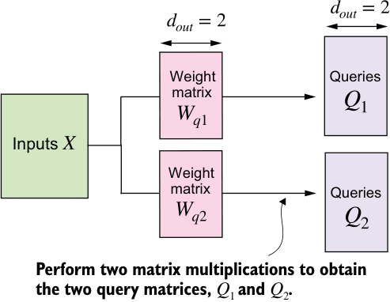
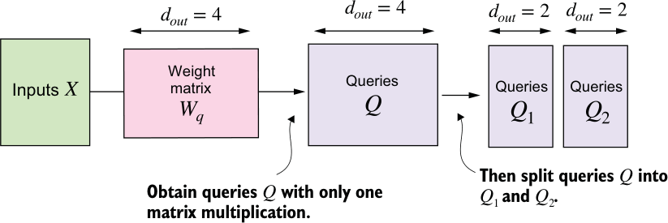
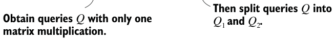
Q2.
Q2.
Figure 3.26 In the MultiHeadAttentionWrapper class with two attention heads, we initialized two weight matrices, Wq1 and Wq2, and computed two query matrices, Q1 and Q2 (top). In the MultiheadAttention class, we initialize one larger weight matrix Wq, only perform one matrix multiplication with the inputs to obtain a query matrix Q, and then split the query matrix into Q1 and Q2 (bottom). We do the same for the keys and values, which are not shown to reduce visual clutter.
The tensors are then transposed to bring the num_heads dimension before the num_ tokens dimension, resulting in a shape of (b, num_heads, num_tokens, head_dim). This transposition is crucial for correctly aligning the queries, keys, and values across the different heads and performing batched matrix multiplications efficiently.
To illustrate this batched matrix multiplication, suppose we have the following tensor:
代码旁注 1 条
- The shape of this tensor is (b, num_heads, num_tokens, head_dim) = (1, 2, 3, 4).
a = torch.tensor([[[[0.2745, 0.6584, 0.2775, 0.8573],
[0.8993, 0.0390, 0.9268, 0.7388],
[0.7179, 0.7058, 0.9156, 0.4340]],
[[0.0772, 0.3565, 0.1479, 0.5331],
[0.4066, 0.2318, 0.4545, 0.9737],
[0.4606, 0.5159, 0.4220, 0.5786]]]])Now we perform a batched matrix multiplication between the tensor itself and a view of the tensor where we transposed the last two dimensions, num_tokens and head_dim:
print(a @ a.transpose(2, 3))
The result is
tensor([[[[1.3208, 1.1631, 1.2879],
[1.1631, 2.2150, 1.8424],
[1.2879, 1.8424, 2.0402]],
[[0.4391, 0.7003, 0.5903],
[0.7003, 1.3737, 1.0620],
[0.5903, 1.0620, 0.9912]]]])In this case, the matrix multiplication implementation in PyTorch handles the fourdimensional input tensor so that the matrix multiplication is carried out between the two last dimensions (num_tokens, head_dim) and then repeated for the individual heads.
For instance, the preceding becomes a more compact way to compute the matrix multiplication for each head separately:
first_head = a[0, 0, :, :]
first_res = first_head @ first_head.T
print("First head:\n", first_res)
second_head = a[0, 1, :, :]
second_res = second_head @ second_head.T
print("\nSecond head:\n", second_res)The results are exactly the same results as those we obtained when using the batched
matrix multiplication print(a @ a.transpose(2, 3)):
First head:
tensor([[1.3208, 1.1631, 1.2879],
[1.1631, 2.2150, 1.8424],
[1.2879, 1.8424, 2.0402]])
Second head:
tensor([[0.4391, 0.7003, 0.5903],
[0.7003, 1.3737, 1.0620],
[0.5903, 1.0620, 0.9912]])Continuing with MultiHeadAttention, after computing the attention weights and context vectors, the context vectors from all heads are transposed back to the shape (b, num_tokens, num_heads, head_dim). These vectors are then reshaped (flattened) into the shape (b, num_tokens, d_out), effectively combining the outputs from all heads.
Additionally, we added an output projection layer (self.out_proj) to Multi- HeadAttention after combining the heads, which is not present in the Causal- Attention class. This output projection layer is not strictly necessary (see appendix B for more details), but it is commonly used in many LLM architectures, which is why I added it here for completeness.
Even though the MultiHeadAttention class looks more complicated than the MultiHeadAttentionWrapper due to the additional reshaping and transposition of tensors, it is more efficient. The reason is that we only need one matrix multiplication to compute the keys, for instance, keys = self.W_key(x) (the same is true for the queries and values). In the MultiHeadAttentionWrapper, we needed to repeat this matrix multiplication, which is computationally one of the most expensive steps, for each attention head.
The MultiHeadAttention class can be used similar to the SelfAttention and CausalAttention classes we implemented earlier:
torch.manual_seed(123)
batch_size, context_length, d_in = batch.shape
d_out = 2
mha = MultiHeadAttention(d_in, d_out, context_length, 0.0, num_heads=2)
context_vecs = mha(batch)
print(context_vecs)
print("context_vecs.shape:", context_vecs.shape)The results show that the output dimension is directly controlled by the d_out argument:
tensor([[[0.3190, 0.4858],
[0.2943, 0.3897],
[0.2856, 0.3593],
[0.2693, 0.3873],
[0.2639, 0.3928],
[0.2575, 0.4028]],
[[0.3190, 0.4858],
[0.2943, 0.3897],
[0.2856, 0.3593],
[0.2693, 0.3873],
[0.2639, 0.3928],
[0.2575, 0.4028]]], grad_fn=<ViewBackward0>)
context_vecs.shape: torch.Size([2, 6, 2])We have now implemented the MultiHeadAttention class that we will use when we implement and train the LLM. Note that while the code is fully functional, I used relatively small embedding sizes and numbers of attention heads to keep the outputs readable.
For comparison, the smallest GPT-2 model (117 million parameters) has 12 attention heads and a context vector embedding size of 768. The largest GPT-2 model (1.5 billion parameters) has 25 attention heads and a context vector embedding size of 1,600. The embedding sizes of the token inputs and context embeddings are the same in GPT models (d_in = d_out).
- Attention mechanisms transform input elements into enhanced context vector representations that incorporate information about all inputs.
- A self-attention mechanism computes the context vector representation as a weighted sum over the inputs.
- In a simplified attention mechanism, the attention weights are computed via dot products.
- A dot product is a concise way of multiplying two vectors element-wise and then summing the products.
- Matrix multiplications, while not strictly required, help us implement computations more efficiently and compactly by replacing nested
forloops. - In self-attention mechanisms used in LLMs, also called scaled-dot product attention, we include trainable weight matrices to compute intermediate transformations of the inputs: queries, values, and keys.
- When working with LLMs that read and generate text from left to right, we add a causal attention mask to prevent the LLM from accessing future tokens.
- In addition to causal attention masks to zero-out attention weights, we can add a dropout mask to reduce overfitting in LLMs.
- The attention modules in transformer-based LLMs involve multiple instances of causal attention, which is called multi-head attention.
- We can create a multi-head attention module by stacking multiple instances of causal attention modules.
- A more efficient way of creating multi-head attention modules involves batched matrix multiplications.
Exercise 3.3 Initializing GPT-2 size attention modules#
Using the MultiHeadAttention class, initialize a multi-head attention module that
has the same number of attention heads as the smallest GPT-2 model (12 attention
heads). Also ensure that you use the respective input and output embedding sizes
similar to GPT-2 (768 dimensions). Note that the smallest GPT-2 model supports a
context length of 1,024 tokens.
Summary#
- Coding a GPT-like large language model (LLM) that can be trained to generate human-like text
- Normalizing layer activations to stabilize neural network training
- Adding shortcut connections in deep neural networks
- Implementing transformer blocks to create GPT models of various sizes
- Computing the number of parameters and storage requirements of GPT models
由 pdf2html2.py 从 bllm2.pdf 转换。插图为原书矢量图按区域渲染的截图，代码块带语法高亮，连字符断词已按全书词表还原。